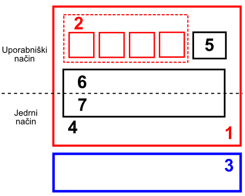

Licenca
To delo je na voljo pod pogoji slovenske licence Creative Commons 2.5:
priznanje avtorstva - nekomercialno - deljenje pod enakimi pogoji.
Celotna licenca je na voljo na spletu na naslovu http://creativecommons.org/licenses/by-nc-sa/2.5/si/. V skladu s to licenco je dovoljeno vsakemu uporabniku delo razmnoževati, distribuirati, javno priobčevati, dajati v najem in tudi predelovati, vendar samo v nekomercialne namene in ob pogoju, da navede avtorja oziroma avtorje in izdajatelja tega dela. Če uporabnik delo predela, kar pomeni, da ga spremeni, preoblikuje, prevede ali uporabi to delo v svojem delu, lahko predelavo dela ponudi na voljo le pod pogoji, ki so enaki pogojem iz te licence oziroma pod enako licenco.

Naloge
1
Za vse uporabniške programe, ki smo jih našteli v podpoglavju Programska oprema, zapiši, pod katero licenco spadajo. Najprej poskusi rešiti nalogo sam, nato si pomagaj z internetom.
2
Poišči na spletu primere licenc. Na osnovi pregledanega se odloči, katero licenco (GPL ali BSD) bi uporabil, če bi napisal svojo program na osnovi odprtokodnega programa ter zakaj.
3
Poveži različico zaprtega programa z odprtokodno različico:
|
Microsoft Word Open Office Writer |
|
Microsoft Excel Open Office Calc |
|
Microsoft PowerPoint Open Office Impress |
|
Adobe Photoshop Gimp |
|
Adobe Ilustrator Inkscape |
4
Kateri sta glavni nalogi operacijskega sistema?
5
Poimenuj pomembne dele računalniškega sistema (vsaka beseda gre v svoj kvadratek):
|  |
1. Programska oprema 2. Uporabniški programi 3. Strojna oprema 4. Operacijski sistem 5. Sistemski program 6. Sistemske knjižnice 7. Jedro |